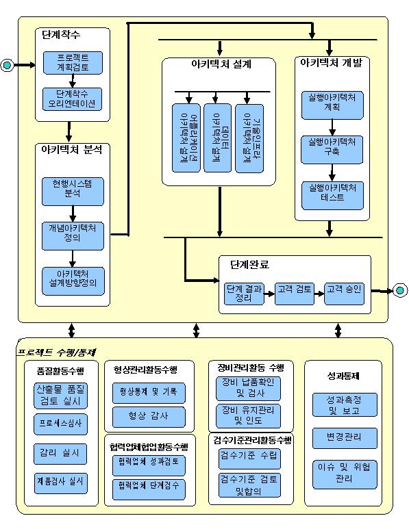

1. 개요 (Overview)
|
구분 |
내용 |
|
목표
(Goal) |
요구정의와 분석 시점에 시스템 구축을 위한 아키텍처 및 설계의 주요 구성요소에 대한 설계원칙과 방향을 제시한다. |
|
수행 범위
(Process Scope) |
l 아키텍처 분석 : 사용자의 핵심요구사항 및 현행시스템의 문제점을 인식하고 To-Be 시스템의 “Big Picture”와 설계전략을 정의
l 아키텍처 설계 : 구축하고자 하는 시스템의 구성 및 각 주요 구성요소에 대한 설계방안을 정의
l 아키텍처 개발 : 설계된 아키텍처를 바탕으로 Prototyping 시스템을 구축하여 상세설계 및 개발의 기반을 정립 |
2. 정책 (Policy)
2.1 프로젝트의 리드 아키텍트(LA)를 중심으로 Application/Data/Technical Architecture 영역별로 설계하고 각 영역 간 일관성이 이루어질 수 있도록 진행한다.
2.2 아키텍처는 시스템 설계 및 개발의 기본원칙과 방향을 수립하는 것으로, 이를 기본 바탕으로 설계/개발자들에 대한 Guide가 이루어지게 된다.
2.3 아키텍처 분석은 현업의 요구사항에 대한 베이스라인을 수립하는 단계와 병행하여 실시되므로, 현업의 핵심 요구사항 및 관심사항을 반영하여 요구사항 범위에 벗어나거나 그릇된 방향의 아키텍처가 수립되지 않도록 유의한다.
2.4 아키텍처 설계는 각 영역별로 다른 정책이 수립되어 설계/개발자들에게 혼란을 주지 않도록 상호 검증이 필요하다. 또한, 경우에 따라 일부 구성요소에 대한 아키텍처 검증을 통해 아키텍처의 변경이 최소화 될 수 있도록 한다.
2.5 아키텍처 개발은 핵심 유스케이스를 선정하여 SA를 중심으로 설계/개발자들이 참여하여 수행하는 것으로, 결과물을 이용하여 설계 및 개발표준을 작성할 수 있어야 한다. 또한, 참여한 개발자들은 각 업무 팀 별 개발리더로서 역할을 수행한다.
3. 공정 흐름도(Process Flow Diagram)

4. 고려사항(Considerations)
4.1 현행시스템 분석은 현행시스템이 존재하지 않거나 ISP 등의 수행 산출물을 이용하여 현행시스템에 대한 현황에 대해 충분히 파악 가능한 경우 현행시스템분석서의 작성은 생략할 수 있다.
4.2 아키텍처설계방향 정의는 아키텍처 설계의 근거로 중요한 역할을 수행한다. 다만, 산출물의 경우 설계방향은 아키텍처 설계서에 모두 포함된 것이며 이해할 수 있기 때문에 고객 측에 납품하지 않아도 된다.
4.3 실행아키텍처의 계획/구축/테스트는 실행아키텍처가 기 구축되어 있는 경우(예로 1차 프로젝트를 구축하고, 그 표준과 인프라를 그대로 적용한 2차 프로젝트를 구축하는 경우) 생략할 수 있지만, 설계/개발자들의 아키텍처에 대한 이해가 부족한 경우 실시하는 것이 유리하다.
4.4 규모가 작은 프로젝트의 경우 아키텍처정의서 하나의 형태로 “개념아키텍처정의서+어플리케이션아키텍처설계서+데이터아키텍처설계서+기술인프라아키텍처설계서”를 통합하여 관리하고 고객 측에 납품하는 것이 유리할 수 있다.
|